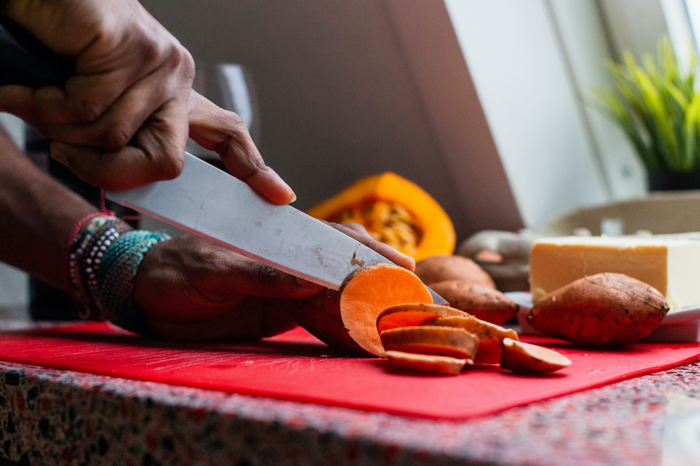

How An Indie Game and A Visual Novel Rhythm Game Use Music to Enhance Stories
Do you love video games with great stories? I know I do. That's why I want to share my blog post about how two video games use music to make their players cry over their stories.
Tips on Securing an Internship
Are you a college student looking for an internship? Some fellow students made a podcast on tips and advice on securing an internship! Best of luck to you!

Cantonese Sweet Potato and Ginger Soup
A super simple family recipe on a type of Chinese dessert soup. It'll warm you right up during the cold or can be a refreshing chilled treat when it's hot!
Stephotography : My Portfolio
My nature photography portfolio. I have a lot of photos of flowers. And ducks. Love the ducks.